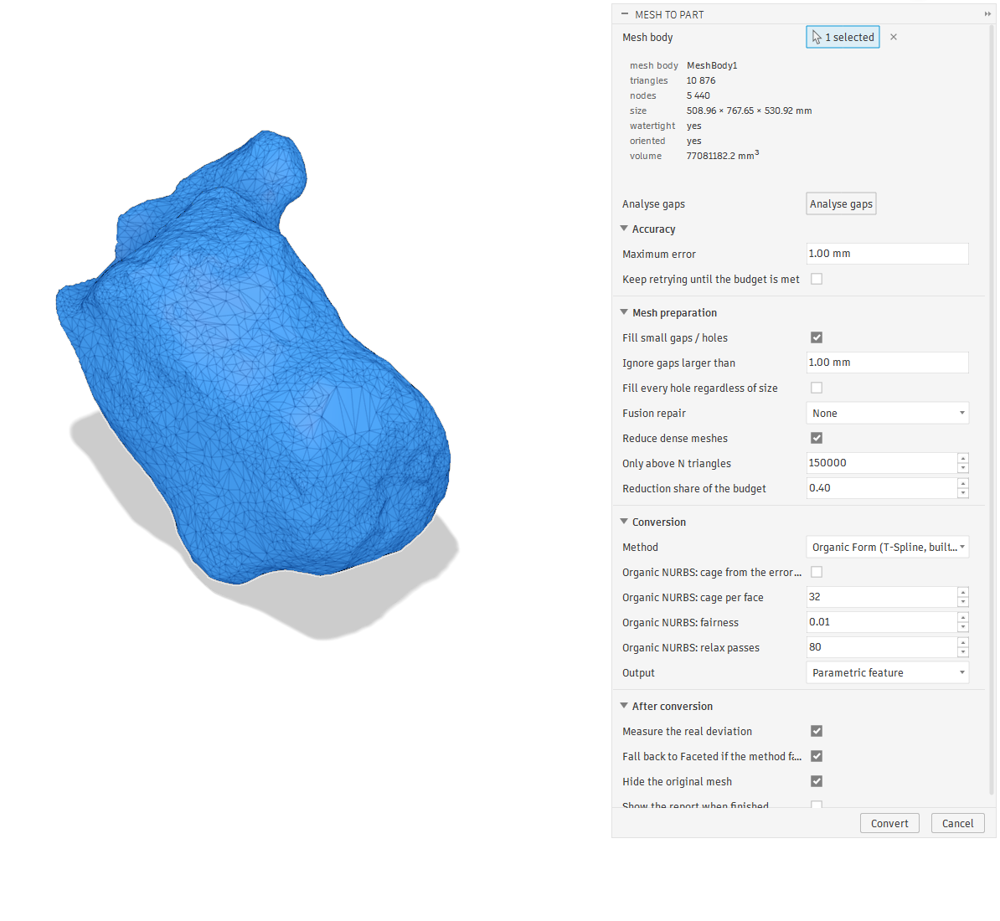
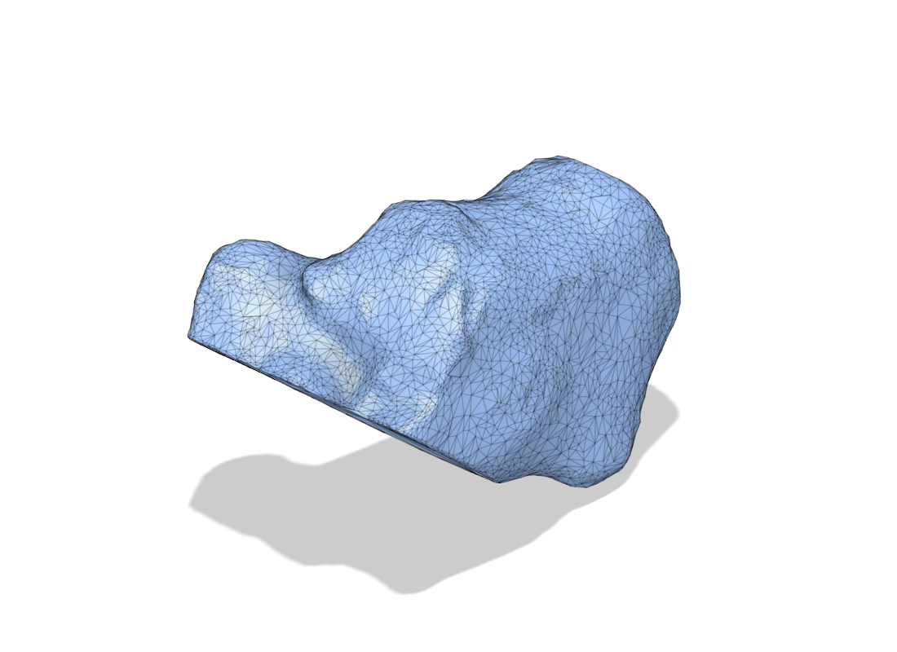
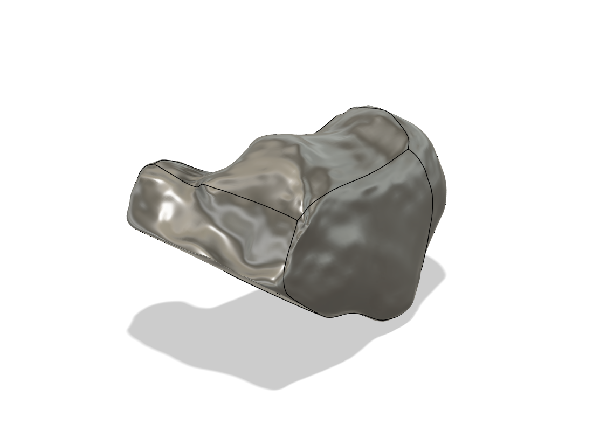
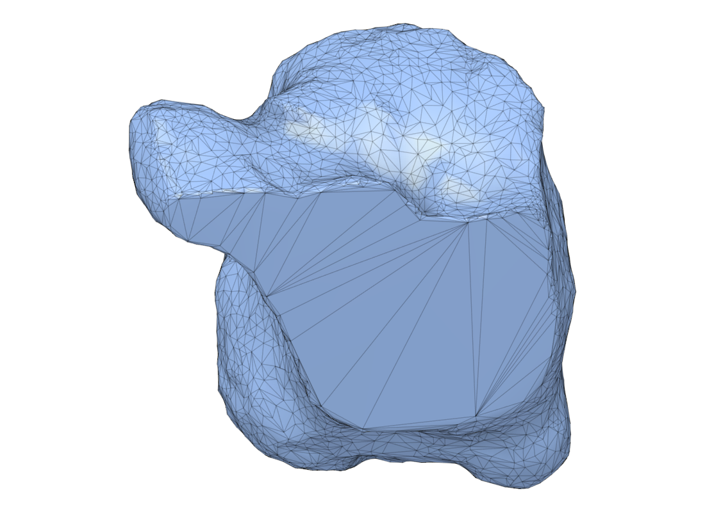
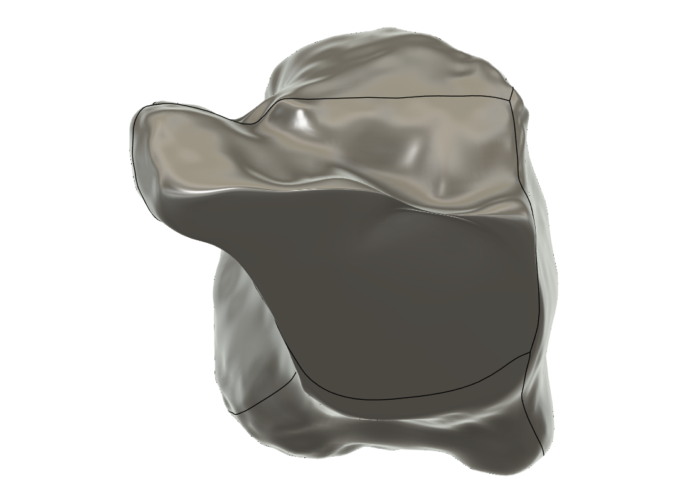
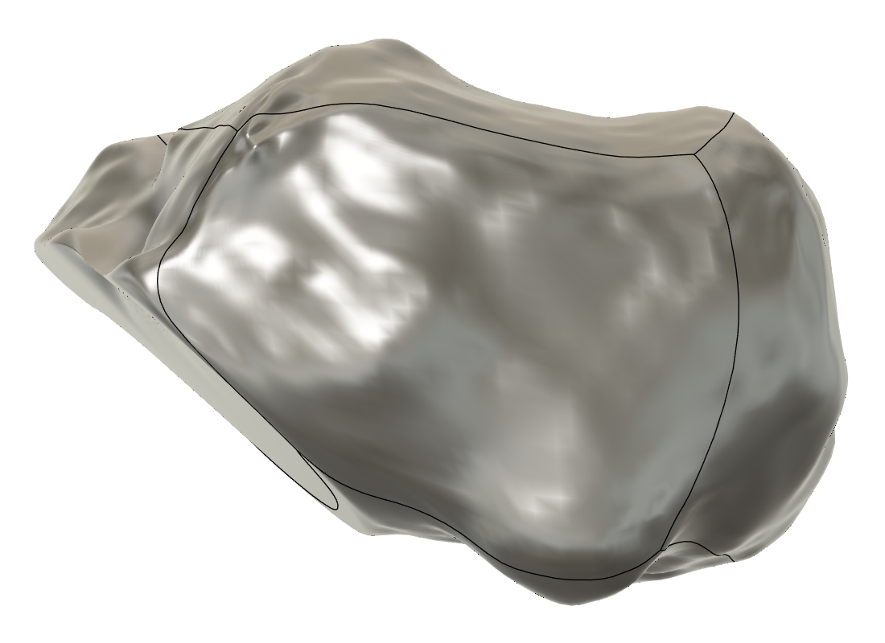

A Fusion 360 add-in that turns a scanned mesh into a solid or a Form body under an explicit maximum-error budget — and measures the result instead of assuming it.
Includes an organic mesh → Form conversion built from scratch, which needs no Product Design Extension.

A 10 876-triangle calcaneus scan, 509 × 768 × 531 mm, watertight, with a mean edge length of 15.7 mm.





Fusion's own Convert Mesh → Organic requires the Product Design Extension. Two of the four methods here are built into the add-in and need nothing.
| Method | Output | Extension |
|---|---|---|
| Organic Form (T-Spline) | a real Form body, six patches, sculptable | not needed |
| Organic NURBS | a six-patch NURBS solid, watertight by construction | not needed |
| Prismatic | Fusion's own — planes, cylinders, cones | not needed |
| Faceted | Fusion's own — one face per triangle, exact | not needed |
| Organic | Fusion's own T-Spline conversion | required |
Whichever you pick, the tool converts, measures the deviation both ways against the source mesh, and climbs an escalation ladder until the budget is met or the ladder runs out. The report always says which happened.
Every figure was measured inside Fusion against the source mesh.
| Input | Method | Max | RMS | p95 | Volume error |
|---|---|---|---|---|---|
| sphere ⌀30 mm | Form | 0.039 mm | 0.012 mm | 0.024 mm | +0.04 % |
| sphere ⌀30 mm | NURBS | 0.012 mm | 0.004 mm | — | −0.02 % |
| capsule | NURBS | 0.121 mm | 0.021 mm | — | −0.01 % |
| calcaneus, 1063 mm diagonal | Form | 12.7 mm | 1.14 mm | 1.92 mm | −0.23 % |
| calcaneus | NURBS | 12.9 mm | 0.87 mm | 1.28 mm | −0.13 % |
On the bone, judge by p95 and RMS. The max sits at a handful of isolated 150° creases in a mesh whose mean edge is 15.7 mm — no smooth surface reproduces those, and Fusion's own Organic conversion would round them too.
A cube-sphere quad cage is shrink-wrapped onto the mesh, then relaxed tangentially so points slide along the surface into concavities instead of being lifted out of them. It lands on the mesh to 1e−11 mm. From there:
addByTSMDescription. A subdivision surface does not pass through its
own control points, so emitting a cage that lies on the scan would put the body
several millimetres inside it.BRepBodyDefinition assembles
8 vertices, 12 edges and 6 faces.A cage of radius 2.0 emitted as TSM produced a body 32.9146 mm across; the Catmull-Clark limit maths predicts 32.9146 mm. A fitted 30 mm sphere came back as 29.9986 mm.
git clone <this repo> powershell -File install.ps1 pip install numpy scipy trimesh # the fitting runs outside Fusion
Then in Fusion: Utilities → ADD-INS → Scripts and Add-Ins → Add-Ins → Mesh to Part → Run. The button appears in Mesh → Modify and Solid → Create.